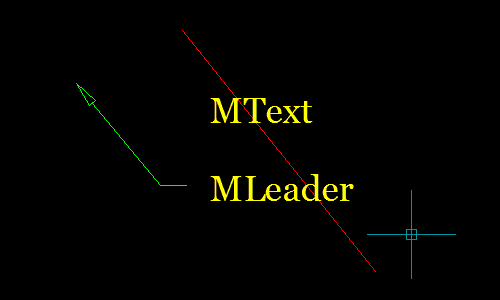

Background Mask
This page is delivered for consistency purposes only, as part of the LeeMac sample module of DynALisp, which shows how DynALisp turns existing AutoLISP programs into a module. The program and its description are the work of Lee Mac, who keeps all the credit for them. The original page, with the latest version, is on Lee Mac's website: https://lee-mac.com/mask.html
Contents
| Function Syntax | LM-BackgroundMask – original syntax: bmask (see aliases) |
| Current Version | 1.5 |
| Compatible with AutoCAD for Mac? | No |
| Compatible with AutoCAD LT? | Yes |
| This program is also available at the Autodesk Exchange App Store | |
| Original Page | lee-mac.com/mask.html |
Program Description
This program allows the user to manipulate all available properties of the background mask for a selection of Multiline Text (MText), Multileader (MLeader), and Dimension objects.
Upon calling the program with the syntax bmask, the user is prompted to make a selection of MText, MLeaders and/or Dimensions for which to alter the background mask settings.
Following a valid selection, the user is presented with a dialog interface, enabling the user to toggle the use of a background mask, change the mask offset (not applicable to dimensions), and change the mask colour for all objects in the selection simultaneously.
The background mask for dimensions will be applied as a dimension style override unless the settings held by the dimension style associated with the dimension match those selected by the user.
The background mask offset is only applicable to MText & MLeader objects and will therefore have no effect on selected Dimensions.
Demonstration

Creating Custom Background Mask Programs
The program is structured in such a way as to enable custom background mask programs to be created which bypass the main program dialog.
The program defines the following functions which may be evaluated with parameters which manipulate the background mask for a single object or for all objects in a supplied selection:
Mask Selection
| Function Syntax | (mask:maskselection [sel] [msk] [off] [trn] [col]) |
| Arguments | ||
|---|---|---|
| Symbol | Type | Description |
| sel | Selection Set | Selection Set containing MText, MLeaders and/or Dimensions |
| msk | Boolean | T = Enable Background Mask; nil = Disable Background Mask |
| off | Real | Background Mask Offset Factor (1 ≤ off ≤ 5) |
| trn | Boolean | T = Transparent Background Mask; nil = Use Colour argument |
| col | List | Association list as returned by acad_truecolordlg to control Background Mask colour |
Notes on Function Arguments
Selection [sel]
A selection set containing a set of objects for which to manipulate the background mask properties.
This selection may contain multiline text (MText), multileaders (MLeaders), and/or Dimensions of any type. If the selection contains other objects (i.e. with object type other than those listed above), then such objects will be ignored when processing the selection and will not cause the program to error. Similarly, if the selection set argument is null, the program will exit without error.
Enable/Disable Background Mask [msk]
This argument controls whether the background mask should be enabled or disabled for all objects in the supplied selection.
If this argument is non-nil, a background mask with properties defined by the below parameters will be applied to all objects in the supplied selection; if the argument is nil, the below parameters will be ignored and any background mask applied to the objects in the selection will be disabled.
Background Mask Offset Factor [off]
This numerical argument determines the offset of the background mask from the extents of the object, as a factor of the text height.
This argument accepts numerical values within the range 1-5: a value of 1.0 will result in a background mask which exactly fits the boundary of the MText or MLeader object (note that this is not necessarily the boundary of the text content, depending on how the background mask is implemented in the host application), a factor of 1.5 extends the border by 0.5 times the text height etc.
This argument is ignored for Dimensions, as the background mask for Dimensions does not support an offset factor. The argument is also ignored if the msk argument is nil.
Transparent Background Mask [trn]
This boolean argument determines whether or not the applied background mask is transparent.
If the msk argument is non-nil and this argument is also non-nil, then the background mask applied to all objects in the selection will be transparent (i.e. the background mask colour will match the drawing background colour).
This argument is ignored if the msk argument is nil.
Background Mask Colour [col]
This argument determines the colour of the background mask applied to all objects in the selection.
The argument takes the form of an association list of DXF groups as returned by the acad_truecolordlg function, for example: '((62 . 3)) or, for a true colour value: ((62 . 102) (420 . 1697309)).
This argument will be ignored if msk is nil, or if trn is non-nil.
Mask Entity
| Function Syntax | (mask:maskentity [ent] [msk] [off] [trn] [col]) |
| Arguments | ||
|---|---|---|
| Symbol | Type | Description |
| ent | Entity Name | MText, MLeader or Dimension entity |
| msk | Boolean | T = Enable Background Mask; nil = Disable Background Mask |
| off | Real | Background Mask Offset Factor (1 ≤ off ≤ 5) |
| trn | Boolean | T = Transparent Background Mask; nil = Use Colour argument |
| col | List | Association list as returned by acad_truecolordlg to control Background Mask colour |
This function operates in much the same way as the above mask:maskselection function, however, accepting a single entity in place of a selection set as the first argument.
Get Selection
| Function Syntax | (mask:selection [msg]) |
| Arguments | ||
|---|---|---|
| Symbol | Type | Description |
| msg | String | Selection prompt displayed at the command-line |
| Returns | ||
| Type | Description | |
| Selection Set | A selection set containing MText, MLeaders and/or Dimensions, else nil | |
This convenience function allows the user to obtain a selection set containing MText, MLeaders and/or Dimensions with a custom selection prompt.
Example Programs
The following custom background mask programs evaluate the above described functions in order to manipulate the background mask for a single object or selection of objects, whilst bypassing the main program dialog.
Example 1
The following example will apply a transparent background mask with an offset factor of 1.5 to a selection of MText, MLeaders and/or Dimensions.
(defun c:mask1 nil (mask:maskselection (mask:selection "\nSelect objects: ") t 1.5 t nil) (princ) )
Example 2
This example will apply a red (ACI colour 1) background mask with an offset factor of 3.0 to a selection of MText, MLeaders and/or Dimensions.
(defun c:mask2 nil (mask:maskselection (mask:selection "\nSelect objects: ") t 3.0 nil '((62 . 1))) (princ) )
Example 3
This example will remove any background masks present in a selection of MText, MLeaders and/or Dimensions.
(defun c:mask3 nil (mask:maskselection (mask:selection "\nSelect objects: ") nil nil nil nil) (princ) )
Example 4
This final example will apply a background mask with colour 120,0,120 and offset factor 1.2 to a single selected MText, MLeader or Dimension.
(defun c:mask4 ( / ent ) (if (setq ent (car (entsel))) (mask:maskentity ent t 1.2 nil '((62 . 216) (420 . 7864440))) ) (princ) )
Bundled program notes
;;------------------------------=={ Mask }==----------------------------;;
;; ;;
;; This program allows the user to manipulate all available properties ;;
;; of the background mask for a selection of Multiline Text (MText), ;;
;; Multileader (MLeader), and Dimension objects. ;;
;; ;;
;; Upon calling the program with the syntax 'bmask', the user is ;;
;; prompted to make a selection of MText, MLeaders and/or Dimensions ;;
;; for which to alter the background mask settings. ;;
;; ;;
;; Following a valid selection, the user is presented with a dialog ;;
;; interface, enabling the user to toggle the use of a background ;;
;; mask, change the mask offset (not applicable to dimensions), and ;;
;; change the mask colour for all objects in the selection ;;
;; simultaneously. ;;
;; ;;
;; The background mask for dimensions will be applied as a dimension ;;
;; style override unless the settings held by the dimension style ;;
;; associated with the dimension match those selected by the user. ;;
;; ;;
;; The background mask offset is only applicable to MText & MLeader ;;
;; objects and will therefore have no effect on selected Dimensions. ;;
;; ;;
;;----------------------------------------------------------------------;;
;; Author: Lee Mac, Copyright © 2012 - www.lee-mac.com ;;
;;----------------------------------------------------------------------;;
;; Version 1.0 - 2012-04-16 ;;
;; ;;
;; - First release. ;;
;;----------------------------------------------------------------------;;
;; Version 1.1 - 2013-02-06 ;;
;; ;;
;; - Changed command syntax to 'bmask' since 'mask' is an existing ;;
;; command in AutoCAD Civil 3D. ;;
;;----------------------------------------------------------------------;;
;; Version 1.2 - 2016-05-22 ;;
;; ;;
;; - Program restructured to enable dialog bypass. ;;
;; - Added ability to mask dimensions. ;;
;;----------------------------------------------------------------------;;
;; Version 1.3 - 2016-05-23 ;;
;; ;;
;; - Defined dedicated mask:selection function to facilitate the ;;
;; creation of custom programs which bypass the program dialog. ;;
;;----------------------------------------------------------------------;;
;; Version 1.4 - 2017-04-17 ;;
;; ;;
;; - Fixed a bug causing the program to crash when modifying the ;;
;; background mask of dimensions with dimension style overrides. ;;
;;----------------------------------------------------------------------;;
;; Version 1.5 - 2018-11-10 ;;
;; ;;
;; - Added code to account for a bug in AutoCAD in which multileader ;;
;; text spacing is altered after modifying the background mask. ;;
;;----------------------------------------------------------------------;;
Command Names And Aliases
As in every DynALisp module, each program of this sample module has one main command, named LM-*, and the original command names of Lee Mac's page are kept as its aliases: they run the same command, and can be added, renamed or removed in Dyl-Suite (saved in Resources\Aliases.csv).
| Command | Aliases | Name |
|---|---|---|
| LM-BackgroundMask | BMASK | Background Mask |